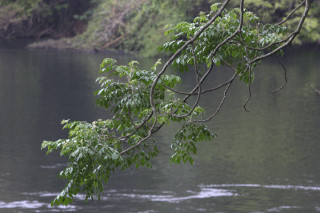
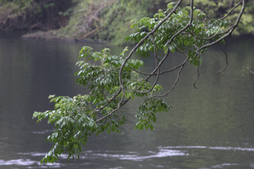

Images :
 



| Habit : | Tree up to 25 m tall. |
| Leaves : | Leaves compound , bipinnate to tripinnate , imparipinnate , alternate , spiral , up to 1 m long, pulvinate ; rachis terete , to 30 cm long; petiolule 0.3-1.2 cm; pinnae 3-8 pairs; leaflets 2-11 on each pinnae , opposite , 4.5-9 x 2-4 cm, ovate - elliptic , apex acuminate , base cuneate or attenuate , asymmetric , margin crenate , coriaceous , glabrous when mature; midrib raised above; secondary_nerves ca. 10 pairs, gradually curved; tertiary_nerves broadly reticulate . |
| Inflorescence / Flower : | Inflorescence axillary panicles , 12-20 cm long; flowers greenish-white. |
| Fruit and Seed : | Drupe , ovoid or ellipsoid , with longitudinal ridges, pulpy, yellowish; seeds 1-6. |